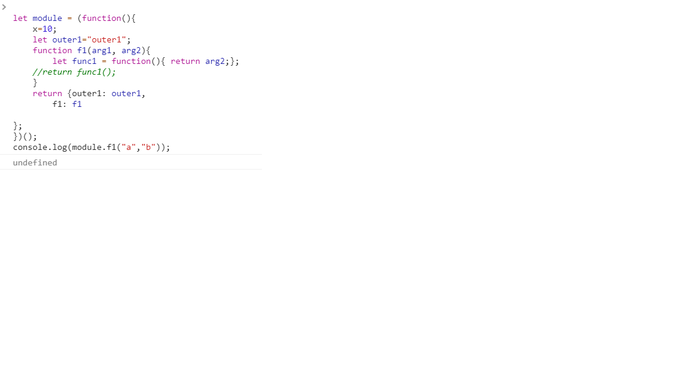

a. There is one global variable: x
b. There is one closure in the code: the anonymous function inside f1
c. Output of the code:
outer1
10
d. We cannot call function f1 from outside the module
In order to do that, we have to return f1 in the return statement of module as follows:
